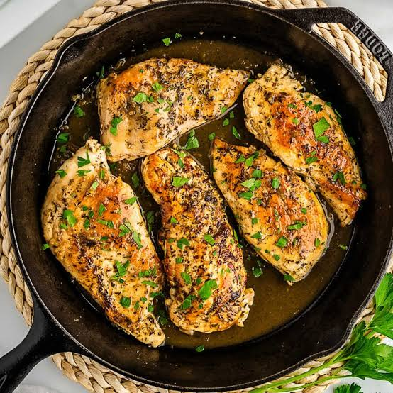

Classic Garlic Butter Chicken

Juicy chicken breast pieces cooked in a rich, flavorful garlic butter sauce with fresh herbs.
Ingredients
- 300g chicken breast (boneless, cubed)
- 2 tbsp butter & 1 tbsp olive oil
- 4 garlic cloves (minced)
- 1 tbsp lemon juice
- Salt, black pepper, and dried parsley
Steps
Season Chicken:
Toss chicken cubes with salt and black pepper.Sear Meat:
Heat olive oil in a pan and cook chicken until golden brown and cooked through; remove from pan.Make Sauce:
Melt butter in the same pan, add minced garlic, and sauté for 1 minute.Combine:
Return chicken to the pan, pour in lemon juice, and stir well for 2 minutes.Garnish:
Sprinkle with parsley and serve warm.
Click here on Home to go to Home page.